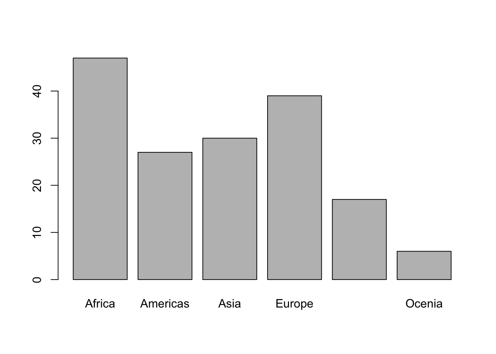
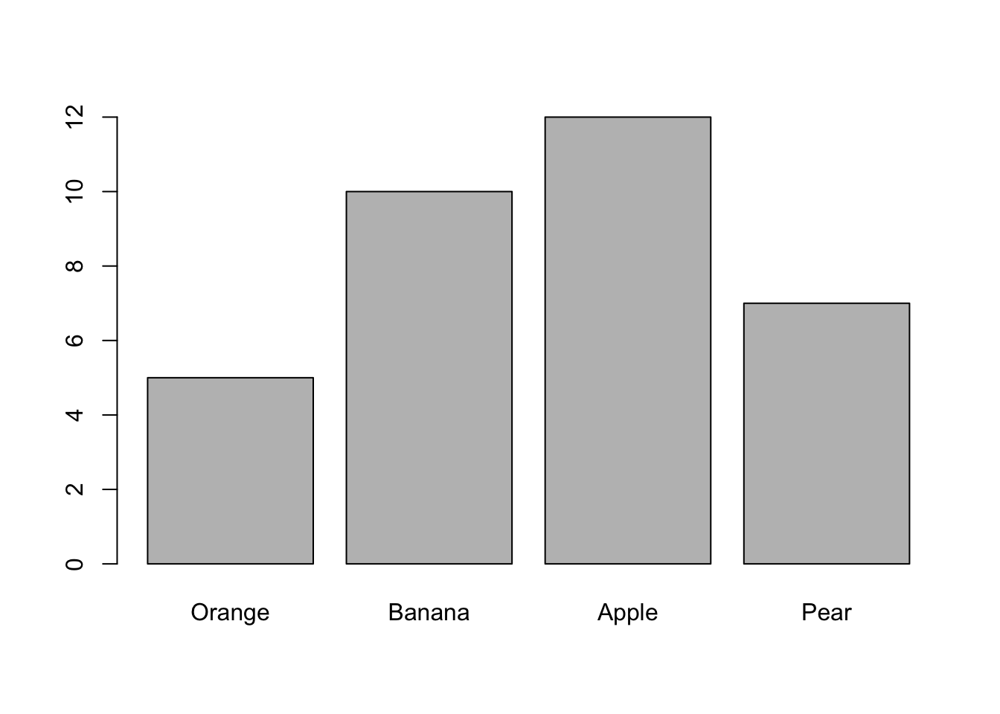
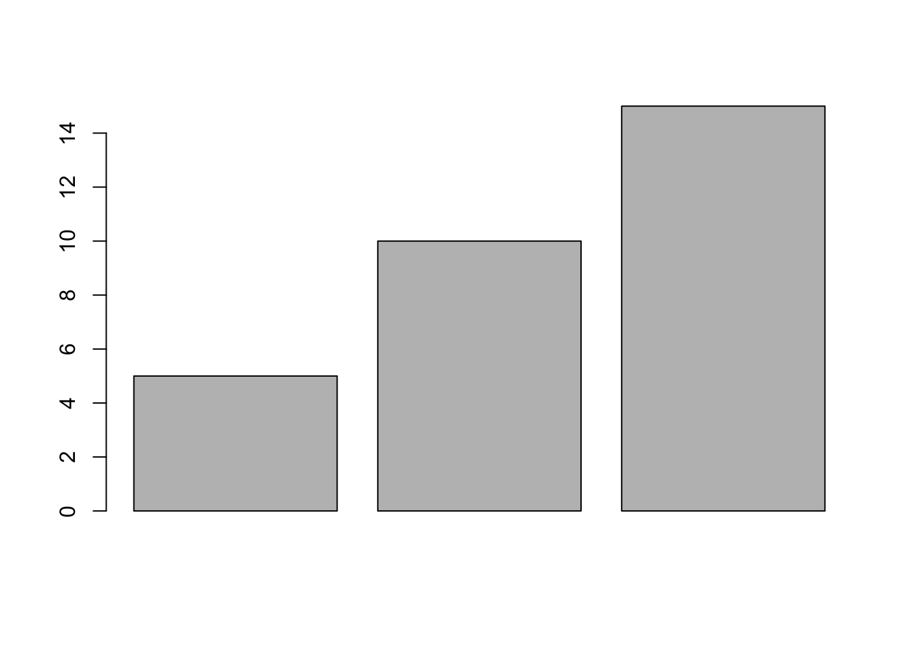
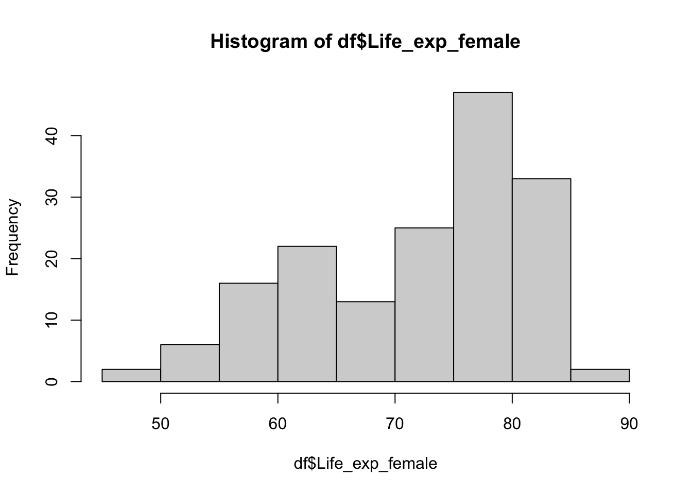
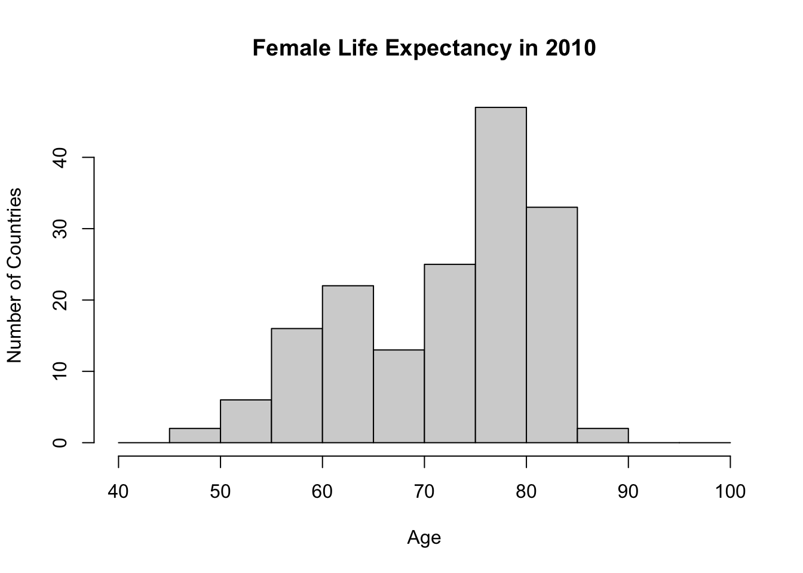
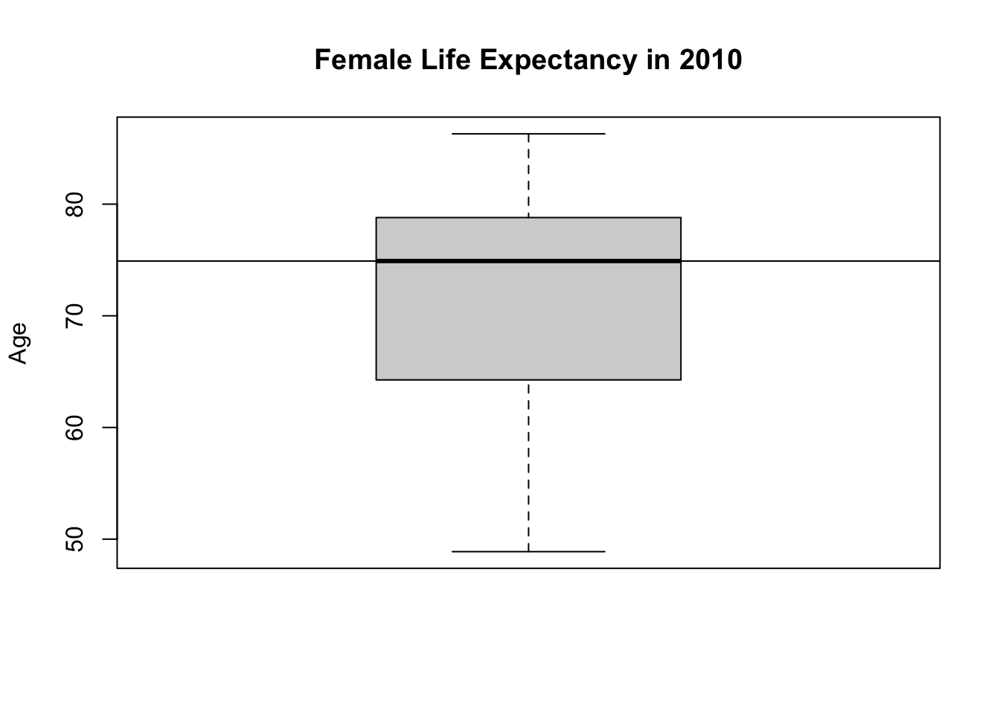

# list files under working directory
list.files()3 Data Basics
If you have followed the instructions in Chapter 2.10, you should have a folder for this module in which one R file named 01_R_basics.R and one folder named data are present.
You can open R Studio by launching 01_R_basics.R. You should see a screen similar to Figure 3.1 R Studio will automatically set working directory to your module folder. This approach allows us to have a tidy filing system. Our data files are in the data folder.
Let’s create a new R Script for this week. It is either File > New File > R Script or . You can save your script by . Give it an intuitive name such as 02_analysis_basics.R.
3.1 Load a .csv file
For practice purposes, let’s load the simple dataframe we created last week. We will use read.csv() function. Recall that the file is under the folder data.
Let’s download the dataset names World in 2010. This dataset is available on Blackboard. It can also be downloaded from here. A codebook is also available on Blackboard. Make sure to take a look at it
Let’s be tidy and move this file into the data folder under our module folder. You can navigate in your module directory within R Studio. For example, the files tab in Figure 3.2 show the folder data.

You can actually list files in your computer with R commands too!
# list files under data folder
list.files("data/")Now we are ready to load world_in_2010.csv into R. We should try to understand the structure of the dataset. Let’s have a good sense of this dataset.
# load data:
df <- read.csv("data/world_in_2010.csv")
# have a look using View(df)
# View(df)
# type of the object
class(df)[1] "data.frame"#> [1] "data.frame"
# how many variables?
ncol(df)[1] 42#> [1] 42
# how many rows?
nrow(df)[1] 166#> [1] 166
# names of the variables
names(df) [1] "COWcode" "Country_Code"
[3] "Country_Name" "WB_Region"
[5] "WB_IncomeGroup" "Population_total"
[7] "Urban_pop" "GDP_pc_PPP"
[9] "Infant_Mortality_Rate" "Life_exp_female"
[11] "Life_exp_male" "HIV"
[13] "Literacy_rate_female" "Literacy_rate_all"
[15] "Current_acc_bal_USD" "Current_acc_bal_perc_of_GDP"
[17] "ODA_USD" "ODA_perc_of_GNI"
[19] "Natural_resources_rents_perc_of_GDP" "FDI_net_inflows_perc_of_GDP"
[21] "Net_migration_2008_2012" "GINI_index_WB_estimate"
[23] "Inc_share_by_highest_10per" "Unemployment_rate"
[25] "Surface_area_sq_km" "v2x_polyarchy"
[27] "democracy" "v2x_libdem"
[29] "v2x_egaldem" "Geographical_Region"
[31] "UN_vote_PctAgreeUS" "UN_vote_PctAgreeRUSSIA"
[33] "UN_vote_PctAgreeBrazil" "UN_vote_PctAgreeChina"
[35] "UN_vote_PctAgreeIndia" "UN_vote_PctAgreeIsrael"
[37] "milex" "milper"
[39] "cinc" "CivilConflict"
[41] "Corruptions_Perspectives_Index" "Turnout" Each row represents a state in the international system. So we can say that the unit of observation is the state. Variables show several attributes of each state (note that I will use state and country interchangeable).
We call this a cross-sectional data because we have units but no time dimension. The whole dataset is for the year 2010. Usually, such country-level data would also contain multiple years so that comparison can be over-time, but to keep things simple for now, we are only working with a single year. When we add the time dimension to cross-sectional data, we will call it time-series cross-sectional.
How many countries do we have in this dataset? We already know the answer because we checked the number of rows. Recall that each row represents a state in the international system so that the total number of rows will give me the number of countries in the data.
# how many rows?
nrow(df)[1] 1663.2 Summary of a categorical variable
Let’s describe a categorical variable. We can work with Geographical_Region, which records where a country is located geographically. To see how many countries are in each region, we can use table() and provide a descriptive summary of this variable.
table(df$Geographical_Region)
Africa Americas Asia
47 27 30
Europe Mid. East & North Africa Ocenia
39 17 6 Now, we have a frequency table of Geographical_Region. I can see that 47 countriese are in Africa, 27 in Americas and so on. For categorical variables, a frequency table is appropriate for a descriptive summary.
We can also create a bar plot and visually summarize the data. Each bar will represent the number of countries in each geographical region. In short, we will visually display the information in table(df$Geographical_Region) using a barplot.
barplot(height = table(df$Geographical_Region))
This is a good start, but we will do better. Before going any further, let’s unpack the code. The function barplot() takes a vector of numbers, which it uses to display heights. For instance, if we want to display four bars with heights 5, 10, 12 and 7, we can plug such a vector into barplot().
barplot(height = c(5,10,12,7))Note that bars above don’t have labels at the moment, because we did not provide any information. For Geographical_Region, however, table() creates a named vector.
# df$Geographical_Region is a named vector:
table(df$Geographical_Region)
Africa Americas Asia
47 27 30
Europe Mid. East & North Africa Ocenia
39 17 6 # Names:
names(table(df$Geographical_Region))[1] "Africa" "Americas"
[3] "Asia" "Europe"
[5] "Mid. East & North Africa" "Ocenia" Going back to our hypothetical barplot, we can provide it a names argument. Let’s say the numbers 5, 10, 12 and 7 correspond to Orange, Banana, Apple, Pear.
barplot(height = c(5,10,12,7), names.arg = c("Orange", "Banana", "Apple", "Pear"))
For easier read and navigation, it is a good idea to use a systematic way to write the code. You can press after the end of the first argument.
# easier to read code
barplot(height = c(5,10,12,7),
names.arg = c("Orange", "Banana", "Apple", "Pear")
)
Now we have a very good idea how barplot() works.
Going back to the bar plot for Geographical_Region, the category “Mid. East & North Africa” is too long. I want to change it with just “MENA”.
You can take assign table input to an object and work on it.
# Get the table() into an object
georeg_tab <- table(df$Geographical_Region)
# Check the object
georeg_tab
Africa Americas Asia
47 27 30
Europe Mid. East & North Africa Ocenia
39 17 6 # check the names of each value
names(georeg_tab)[1] "Africa" "Americas"
[3] "Asia" "Europe"
[5] "Mid. East & North Africa" "Ocenia" Fifth item in names(georeg_tab) is “Mid. East & North Africa”. I could go and change it by using the squared bracket [] notation.
# Fifth Item in Barplot
names(georeg_tab)[5][1] "Mid. East & North Africa"# To change it you can assign a new name
names(georeg_tab)[5] <- "MENA"
# Check the object again
georeg_tab Africa Americas Asia Europe MENA Ocenia
47 27 30 39 17 6 Now we are ready to do the barplot.
barplot(georeg_tab)
3.3 Understanding functions
We used the command barplot() to create a bar graph. barplot() is called a function. A function usually gets an object (or objects), and returns something, such as a graph.
You can use the help() function to read more about a specific function. For example, let’s read the help file for barplot().
help(barplot)An input of a function is called an argument. We don’t need to specify all arguments, but some of them are always required. For example, for barplot(), we need to define the height.
barplot(height = c(5, 10, 15))
We can add names by adding names.arg.
barplot(height = c(5, 10, 15),
names.arg = c("Banana", "Apple", "Pear"))You can change the width of each bar.
barplot(height = c(5, 10, 15),
names.arg = c("Banana", "Apple", "Pear"),
width = c(1,2,3))It is also possible to change colors (for all three, or one by one).
# yellow, red and green colors
barplot(height = c(5, 10, 15),
names.arg = c("Banana", "Apple", "Pear"),
col = c("yellow", "red", "green"))# all blue
barplot(height = c(5, 10, 15),
names.arg = c("Banana", "Apple", "Pear"),
col = "blue")3.4 Summary of a numerical variable
Next, let’s work with a numerical variable. Life_exp_female is a measurement of female life expectancy across the world in 2010. The function summary() will give the min, max, mean, median, and first and third quartiles.
# Summary of the variable
summary(df$Life_exp_female) Min. 1st Qu. Median Mean 3rd Qu. Max.
48.88 64.41 74.91 71.94 78.73 86.30 We can also check such statistics one by one.
# mean of a variable
mean(df$Life_exp_female)[1] 71.94012# minimum
min(df$Life_exp_female)[1] 48.88# maximum
max(df$Life_exp_female)[1] 86.3Recall that quartiles divides the data into four parts. Median is the mid-point, which is also called the second quartile.
| Symbol | Name(s) | Definition | Use |
|---|---|---|---|
| min | Minimum | Minimum of data | The lowest data point |
| Q1 | 25th Percentile First Quartile |
Splits off the lowest 25% of data from the highest 75% | A common low value |
| Q2 | 50th Percentile Second Quartile Median |
Middle of data | A common value |
| Q3 | 75th Percentile Third Quartile |
splits off the highest 75% of data from the lowest quarter | A common high value |
| max | Maximum | Maximum of data | The highest data point |
Besides summary() we can also use median() and quantile() functions to get the quartiles.
# median:
median(df$Life_exp_female)[1] 74.905# also median:
quantile(df$Life_exp_female, probs = 0.50) # 0.50 indicates half-way (50%) 50%
74.905 # first quartile
quantile(df$Life_exp_female, probs = 0.25) # 0.25 indicates 25% 25%
64.41 # third quartile
quantile(df$Life_exp_female, probs = 0.75) # 0.75 indicates 75% 75%
78.73 # five point summary
quantile(df$Life_exp_female, probs = c(0, 0.25, 0.50, 0.75, 1)) 0% 25% 50% 75% 100%
48.880 64.410 74.905 78.730 86.300 Using summary() to get a five-point numerical summary is perfectly fine. We briefly visited quantile() for demonstration purposes. There are many ways to achieve the same thing in R.
For dispersion, variance and standard deviation can be calculated.
# standard deviation
sd(df$Life_exp_female)[1] 9.353926# variance
var(df$Life_exp_female)[1] 87.49594# recall that square root of variance is standard deviation
sqrt( var(df$Life_exp_female) )[1] 9.353926# ask R if you don't believe me
sd(df$Life_exp_female) == sqrt( var(df$Life_exp_female) )[1] TRUENote that == here means is equal to?
# 2 plus 2 is 4, or is it?
2 + 2 == 4[1] TRUE# is 10 / 2 equal to 4?
10 / 2 == 4 [1] FALSE# no3.5 Visual summary
When working on a new dataset, it is always a good idea to start by visually summarizing your variables of interest one-by-one. This will help you to get a better understanding of the data.
For a numerical variable, two types of graphs are appropriate for a visual summary:
- Histogram
- Box plot3.5.1 Histogram
# histogram:
hist(df$Life_exp_female)
You can tell R how many bins you would like to have in your histogram by using the breaks argument, but as the R help file clarifies, this number is a suggestion only, and R can use a different (but similar value) to draw a pretty histogram.
# histogram with fewer bins
hist(df$Life_exp_female, breaks = 5)# histogram with higher number of bins
hist(df$Life_exp_female, breaks = 30)You might want to specify cut points. For example, you might want to have a sequence from 40 to 100 with increment of 5.
# a sequence from 40 to 100 by 5
seq(from = 40, to = 100, by = 5) [1] 40 45 50 55 60 65 70 75 80 85 90 95 100# put it into an object
my_breaks <- seq(from = 40, to = 100, by = 5)
# this will be our break points
#tell R to do the histogram using these points
hist(df$Life_exp_female, breaks = my_breaks)This looks quite nice and intuitive. However, titles are not defined. I don’t want to see df$Life_exp_female as an axis or main graph title.
#Histogram with titles and breaks
hist(df$Life_exp_female,
breaks = my_breaks,
main = "Female Life Expectancy in 2010",
ylab = "Number of Countries",
xlab = "Age"
)
3.5.2 Box plots
A box plot is another option for graphically summarising a numerical variable. Box graphs are really nice to get a sense of the data, understand the distribution, and quickly see if there are any outliers. They are also very good at creating visual comparisons across groups, something which we will cover in the upcoming weeks.
# Boxplot
boxplot(df$Life_exp_female,
main = "Female Life Expectancy in 2010",
ylab = "Age")This box plot helps us to visualize the five-point summary. You can see minimum, max, median and first and third quartiles.
If you don’t believe me, we can plot these over the boxplot.
# box plot:
boxplot(df$Life_exp_female,
main = "Female Life Expectancy in 2010",
ylab = "Age")
# you can add a line to a plot by abline
# h stands for horizontal
# tell R to draw a horizontal line at the median of Life_exp_female
abline(h = median(df$Life_exp_female))
You can draw lines for each statistic.
# box plot:
boxplot(df$Life_exp_female,
main = "Female Life Expectancy in 2010",
ylab = "Age")
# median
abline(h = median(df$Life_exp_female))
# min
abline(h = min(df$Life_exp_female))
# max
abline(h = max(df$Life_exp_female))
# first quartile
abline(h = quantile(df$Life_exp_female, probs = 0.25))
# third quartile
abline(h = quantile(df$Life_exp_female, probs = 0.75))We drew these lines for demonstration purposes only. It is to learn that a box plot visualizes the information in a five-point summary. Normally, we wouldn’t show them this way because we can assume the reader knows how to read a box plot.